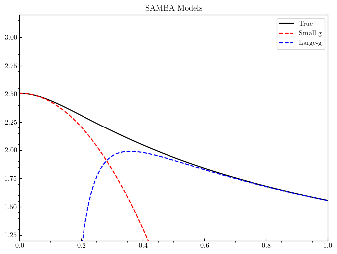
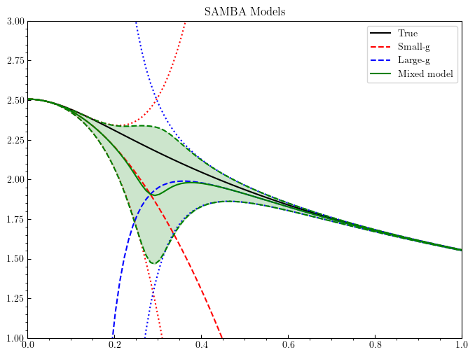

Bivariate BMM Test: Taweret v.0.1.0¶
Author: Alexandra Semposki¶
Date: 10 October 2022¶
[1]:
import numpy as np
import matplotlib
import matplotlib.pyplot as plt
from matplotlib.ticker import AutoMinorLocator
import sys
import os
#matplotlib settings for Latex plots
# matplotlib.rcParams.update({
# 'font.family': 'serif',
# 'text.usetex': True,
# })
[2]:
import sys
sys.path.insert(0, os.path.abspath('../../../../Taweret'))
[3]:
from Taweret.models.samba_models import *
from Taweret.mix.gaussian import *
[4]:
g = np.linspace(1e-6, 1.0, 100)
order = 3
[5]:
model_1 = loworder(order)
model_2 = highorder(order)
true = true_model().predict(g)
exp_1 = model_1.predict(g)
exp_2 = model_2.predict(g)
var_1 = exp_1[1].flatten()
var_2 = exp_2[1].flatten()
[7]:
#example plot to test models
fig, ax = plt.subplots(figsize=(8,6), dpi=100)
ax.set_xlim(0.0,1.0)
ax.set_ylim(1.2,3.2)
ax.tick_params(axis='x', direction='in')
ax.tick_params(axis='y', direction='in')
ax.locator_params(nbins=8)
ax.xaxis.set_minor_locator(AutoMinorLocator())
ax.yaxis.set_minor_locator(AutoMinorLocator())
ax.plot(g, true[0].flatten(), 'k', label='True')
ax.plot(g, exp_1[0].flatten(), 'r--', label='Small-g')
ax.plot(g, exp_2[0].flatten(), 'b--', label='Large-g')
ax.set_title('SAMBA Models')
ax.legend()
[7]:
<matplotlib.legend.Legend at 0x7f8c62357e10>

[8]:
#call mixing method and plot
mixed = bivariate(g, model_1, model_2)
mixed_mean, mixed_intervals = mixed.mixing_prediction()
<Taweret.models.samba_models.loworder object at 0x7f8c622fe9b0>
[9]:
#plotting bivariate BMM results on top of SAMBA models
fig = plt.figure(figsize=(8,6), dpi=100)
ax = plt.axes()
ax.set_xlim(0.0,1.0)
ax.set_ylim(1.0,3.0)
ax.tick_params(axis='x', direction='in')
ax.tick_params(axis='y', direction='in')
ax.locator_params(nbins=8)
ax.xaxis.set_minor_locator(AutoMinorLocator())
ax.yaxis.set_minor_locator(AutoMinorLocator())
ax.plot(g, true[0].flatten(), 'k', label='True')
ax.plot(g, exp_1[0].flatten(), 'r--', label='Small-g')
ax.plot(g, exp_2[0].flatten(), 'b--', label='Large-g')
ax.plot(g, exp_1[0].flatten() - var_1, 'r', linestyle='dotted')
ax.plot(g, exp_1[0].flatten() + var_1, 'r', linestyle='dotted')
ax.plot(g, exp_2[0].flatten() - var_2, 'b', linestyle='dotted')
ax.plot(g, exp_2[0].flatten() + var_2, 'b', linestyle='dotted')
ax.plot(g, mixed_mean, 'g', label='Mixed model')
ax.plot(g, mixed_intervals[:,0], 'g--')
ax.plot(g, mixed_intervals[:,1], 'g--')
ax.fill_between(g, mixed_intervals[:,0], mixed_intervals[:,1], color='green', alpha=0.2)
ax.set_title('SAMBA Models')
ax.legend()
[9]:
<matplotlib.legend.Legend at 0x7f8c60246f28>

[ ]:
[ ]:
[ ]: